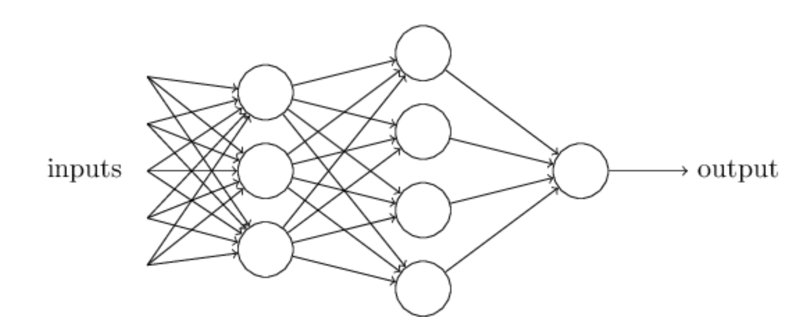
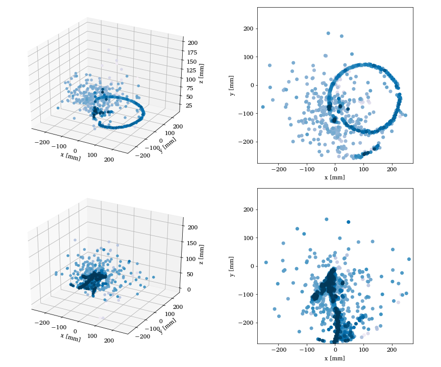

Machine Learning, Quantum Computing and Quantum Mechanics for Many Interacting Particles
OsloMet, August 27, 2021.
What is this talk about?
The main aim is to give you a short and pedestrian introduction to our activities and how they could overlap with the activities at OsloMet.
The hope is that after this talk you have gotten the basic ideas to get you started. Peeping into https://github.com/mhjensenseminars/MachineLearningTalk, you'll find a Jupyter notebook, slides, codes etc that will allow you to reproduce the simulations discussed here, and perhaps run your own very first calculations.
- MSU: Ben Hall, Jane Kim, Julie Butler, Danny Jammoa, Nicholas Cariello, Johannes Pollanen (Expt), Niyaz Beysengulov (Expt), Dean Lee, Scott Bogner, Heiko Hergert, Matt Hirn, Huey-Wen Lin, Alexei Bazavov, and Andrea Shindler
- UiO: Stian Bilek, Håkon Emil Kristiansen, Øyvind Schøyen Sigmundsson, Jonas Boym Flaten, Kristian Wold, Lasse Vines (Expt) and Marianne Bathen (Expt)
This work is supported by the U.S. Department of Energy, Office of Science, office of Nuclear Physics under grant No. DE-SC0021152 and U.S. National Science Foundation Grants No. PHY-1404159 and PHY-2013047.
Why? Basic motivation
How can we avoid the dimensionality curse? Many possibilities
- smarter basis functions
- resummation of specific correlations
- stochastic sampling of high-lying states (stochastic FCI, CC and SRG/IMSRG)
- many more
Machine Learning and Quantum Computing hold great promise in tackling the ever increasing dimensionalities. A hot new field is Quantum Machine Learning, see for example the recent textbook by Maria Schuld and Francesco Petruccione.
- Master of Science thesis of Stian Bilek, Quantum Computing: Many-Body Methods and Machine Learning, August 2020
- Master of Science thesis of Heine Åbø, Quantum Computing and Many-Particle Problems, June 2020
- Marianne EtzelmuellerBathen's PhD, December 2020
More material
More in depth notebooks and lecture notes are at
- Making a professional Monte Carlo code for quantum mechanical simulations https://github.com/CompPhysics/ComputationalPhysics2/blob/gh-pages/doc/pub/notebook1/ipynb/notebook1.ipynb
- From Variational Monte Carlo to Boltzmann Machines https://github.com/CompPhysics/ComputationalPhysics2/blob/gh-pages/doc/pub/notebook2/ipynb/notebook2.ipynb
- Nuclear Talent course on Machine Learning in Nuclear Experiment and Theory, June 22 - July 3, 2020
- Machine Learning course
- Two weeks ML course, with teaching material
Feel free to try them out and please don't hesitate to ask if something is unclear.
Basic activities, Overview
- Machine Learning applied to Quantum Mechanical systems
- Quantum Engineering
- Quantum algorithms
- Quantum Machine Learning
Slides at https://mhjensenseminars.github.io/MachineLearningTalk/doc/pub/oslometqc/html/oslometqc-reveal.html
What has happened during the last two years
During the last two years we have started a large scientific activity on Quantum Computing and Machine Learning at the Center for Computing in Science Education (CCSE), with three PhD students hired since October 2019 (Øyvind Sigmundsson Schøyen, October 2019, Stian Bilek, September 2020, and Jonas Boym Flaten, December 2020) and several master of Science students. This activity spans from the development of quantum-mechanical many-particle theories for studying systems of interest for making quantum computers, via the development of machine learning and quantum algorithms for solving quantum mechanical problems to exploring quantum machine learning algorithms.
From the spring of 2022 we expect to hire a post-doctoral fellow working on quantum computing (many-body theories) at the center for Materials Science and Nanotechnology at the University of Oslo., At present we have from fall 2021 eight Master of Science students working on applications of machine learning and quantum computing. They would be potential candidates for future PhD fellowships.
Machine Learning and Quantum Mechanics
- Short intro to Machine Learning
- Variational Monte Carlo (Markov Chain Monte Carlo or just MC2) and many-body problems, solving quantum mechanical problems in a stochastic way. It will serve as our motivation for switching to Machine Learning.
- From Variational Monte Carlo to Boltzmann Machines and Deep Learning
- Machine Learning and Experiment
Machine Learning and Physics
Machine learning is an extremely rich field, in spite of its young age. The increases we have seen during the last three decades in computational capabilities have been followed by developments of methods and techniques for analyzing and handling large date sets, relying heavily on statistics, computer science and mathematics. The field is rather new and developing rapidly.
Popular software packages written in Python for ML are
and more. These are all freely available at their respective GitHub sites. They encompass communities of developers in the thousands or more. And the number of code developers and contributors keeps increasing.
Lots of room for creativity
Not all the algorithms and methods can be given a rigorous mathematical justification, opening up thereby for experimenting and trial and error and thereby exciting new developments.
A solid command of linear algebra, multivariate theory, probability theory, statistical data analysis, optimization algorithms, understanding errors and Monte Carlo methods is important in order to understand many of the various algorithms and methods.
Job market, a personal statement: A familiarity with ML is almost becoming a prerequisite for many of the most exciting employment opportunities. And add quantum computing and there you are!
Types of Machine Learning
The approaches to machine learning are many, but are often split into two main categories. In supervised learning we know the answer to a problem, and let the computer deduce the logic behind it. On the other hand, unsupervised learning is a method for finding patterns and relationship in data sets without any prior knowledge of the system. Some authours also operate with a third category, namely reinforcement learning. This is a paradigm of learning inspired by behavioural psychology, where learning is achieved by trial-and-error, solely from rewards and punishment.
Another way to categorize machine learning tasks is to consider the desired output of a system. Some of the most common tasks are:
- Classification: Outputs are divided into two or more classes. The goal is to produce a model that assigns inputs into one of these classes. An example is to identify digits based on pictures of hand-written ones. Classification is typically supervised learning.
- Regression: Finding a functional relationship between an input data set and a reference data set. The goal is to construct a function that maps input data to continuous output values.
- Clustering: Data are divided into groups with certain common traits, without knowing the different groups beforehand. It is thus a form of unsupervised learning.
A simple perspective on the interface between ML and Physics

ML in a field like Nuclear Physics, Examples
The large amount of degrees of freedom pertain to both theory and experiment in nuclear physics. With increasingly complicated experiments that produce large amounts data, automated classification of events becomes increasingly important. Here, deep learning methods offer a plethora of interesting research avenues.
- Reconstruction of particle trajectories or classification of events are typical examples where ML methods are being used. However, since these data can often be extremely noisy, the precision necessary for discovery in physics requires algorithmic improvements. Research along such directions, interfacing nuclear physics with AI/ML is expected to play a significant role in physics discoveries related to new facilities. The treatment of corrupted data in imaging and image processing is also a relevant topic.
- Design of detectors represents an important area of applications for ML/AI methods in nuclear physics.
- Many of the above classification problems have also have direct application in theoretical nuclear physics (including Lattice QCD calculations).
More examples
- An important application of AI/L methods is to improve the estimation of bias or uncertainty due to the introduction of or lack of physical constraints in various theoretical models.
- In theory, we expect to use AI/ML algorithms and methods to improve our knowledged about correlations of physical model parameters in data for quantum many-body systems. Deep learning methods like Boltzmann machines and various types of Recurrent Neural networks show great promise in circumventing the exploding dimensionalities encountered in quantum mechanical many-body studies.
- Merging a frequentist approach (the standard path in ML theory) with a Bayesian approach, has the potential to infer better probabilitity distributions and error estimates. As an example, methods for fast Monte-Carlo- based Bayesian computation of nuclear density functionals show great promise in providing a better understanding
- Machine Learning and Quantum Computing is a very interesting avenue to explore. See for example talk of Sofia Vallecorsa.
Selected References
- Mehta et al. and Physics Reports (2019).
- Machine Learning and the Physical Sciences by Carleo et al
- Ab initio solution of the many-electron Schrödinger equation with deep neural networks by Pfau et al..
- Machine Learning and the Deuteron by Kebble and Rios
- Variational Monte Carlo calculations of \( A\le 4 \) nuclei with an artificial neural-network correlator ansatz by Adams et al.
- Unsupervised Learning for Identifying Events in Active Target Experiments by Solli et al.
- Report from the A.I. For Nuclear Physics Workshop by Bedaque et al.
What are the basic ingredients?
Almost every problem in ML and data science starts with the same ingredients:
- The dataset \( \mathbf{x} \) (could be some observable quantity of the system we are studying)
- A model which is a function of a set of parameters \( \mathbf{\alpha} \) that relates to the dataset, say a likelihood function \( p(\mathbf{x}\vert \mathbf{\alpha}) \) or just a simple model \( f(\mathbf{\alpha}) \)
- A so-called loss/cost/risk function \( \mathcal{C} (\mathbf{x}, f(\mathbf{\alpha})) \) which allows us to decide how well our model represents the dataset.
We seek to minimize the function \( \mathcal{C} (\mathbf{x}, f(\mathbf{\alpha})) \) by finding the parameter values which minimize \( \mathcal{C} \). This leads to various minimization algorithms. It may surprise many, but at the heart of all machine learning algortihms there is an optimization problem.
Neural network types
An artificial neural network (NN), is a computational model that consists of layers of connected neurons, or nodes. It is supposed to mimic a biological nervous system by letting each neuron interact with other neurons by sending signals in the form of mathematical functions between layers. A wide variety of different NNs have been developed, but most of them consist of an input layer, an output layer and eventual layers in-between, called hidden layers. All layers can contain an arbitrary number of nodes, and each connection between two nodes is associated with a weight variable.

Nuclear Physics Experiments Argon-46
Two- and three-dimensional representations of two events from the Argon-46 experiment. Each row is one event in two projections, where the color intensity of each point indicates higher charge values recorded by the detector. The bottom row illustrates a carbon event with a large fraction of noise, while the top row shows a proton event almost free of noise. See Unsupervised Learning for Identifying Events in Active Target Experiments by Solli et al. for more detials.

Why Machine Learning?
The traditional Monte Carlo event selection process does not have a well-defined method to quantify the effectiveness of the event selection.
In addition, the selection task normally produces a binary result only, either a good or bad fit to the event of interest. A bad fit is then assumed to be a different event type, and is removed from the analysis.
In a broader perspective, an unsupervised classification algorithm would offer the possibility to discover rare events which may not be expected or are overlooked. These events would likely be filtered out using the traditional methods. From a practical point of view, compared to supervised learning, it also avoids the necessary labeling task of the learning set events, which is error prone and time consuming.
Why Machine Learning for Experimental Analysis?
The \( \chi^2 \) approach used in the traditional analysis performed on the Argon-46 data is extremely expensive from a computational stand because it involves the simulation of thousands of tracks for each recorded event.
These events are in turn simulated for each iteration of the Monte Carlo fitting sequence. Even though the reaction of interest in the above experiment had the largest cross section (elastic scattering), the time spent on Monte Carlo fitting of all of the events produced in the experiment was the largest computational bottleneck in the analysis. In the case of an experiment where the reaction of interest would represent less than a few percent of the total cross section, this procedure would become highly inefficient and prohibitive. Adding to this the large amount of data produced in this experiment (with even larger data sets expected in future experiments), the analysis simply begs for more efficient analysis tools.
More arguments
The computationally expensive fitting procedure would be applied to every event, instead of the few percent of the events that are of interest for the analysis. An unsupervised ML algorithm able to separate the data without a priori knowledge of the different types of events increases the efficiency of the analysis tremendously, and allows the downstream analysis to concentrate on the fitting efforts only on events of interest. In addition, the clustering allows for more exploration of the data, potentially enabling new discovery of unexpected reaction types.
The first theoretical system: electrons in a harmonic oscillator trap in two dimensions
The Hamiltonian of the quantum dot is given by
$$ \hat{H} = \hat{H}_0 + \hat{V},
$$
where \( \hat{H}_0 \) is the many-body HO Hamiltonian, and \( \hat{V} \) is the
inter-electron Coulomb interactions. In dimensionless units,
$$ \hat{V}= \sum_{i < j}^N \frac{1}{r_{ij}},
$$
with \( r_{ij}=\sqrt{\mathbf{r}_i^2 - \mathbf{r}_j^2} \).
This leads to the separable Hamiltonian, with the relative motion part given by (\( r_{ij}=r \))
$$
\hat{H}_r=-\nabla^2_r + \frac{1}{4}\omega^2r^2+ \frac{1}{r},
$$
plus a standard Harmonic Oscillator problem for the center-of-mass motion.
This system has analytical solutions in two and three dimensions (M. Taut 1993 and 1994).
Quantum Monte Carlo Motivation
Given a hamiltonian \( H \) and a trial wave function \( \Psi_T \), the variational principle states that the expectation value of \( \langle H \rangle \), defined through
$$
\langle E \rangle =
\frac{\int d\boldsymbol{R}\Psi^{\ast}_T(\boldsymbol{R})H(\boldsymbol{R})\Psi_T(\boldsymbol{R})}
{\int d\boldsymbol{R}\Psi^{\ast}_T(\boldsymbol{R})\Psi_T(\boldsymbol{R})},
$$
is an upper bound to the ground state energy \( E_0 \) of the hamiltonian \( H \), that is
$$
E_0 \le \langle E \rangle.
$$
In general, the integrals involved in the calculation of various expectation values are multi-dimensional ones. Traditional integration methods such as the Gauss-Legendre will not be adequate for say the computation of the energy of a many-body system.
Quantum Monte Carlo Motivation
Choose a trial wave function \( \psi_T(\boldsymbol{R}) \).
$$
P(\boldsymbol{R},\boldsymbol{\alpha})= \frac{\left|\psi_T(\boldsymbol{R},\boldsymbol{\alpha})\right|^2}{\int \left|\psi_T(\boldsymbol{R},\boldsymbol{\alpha})\right|^2d\boldsymbol{R}}.
$$
This is our model, or likelihood/probability distribution function (PDF). It depends on some variational parameters \( \boldsymbol{\alpha} \).
The approximation to the expectation value of the Hamiltonian is now
$$
\langle E[\boldsymbol{\alpha}] \rangle =
\frac{\int d\boldsymbol{R}\Psi^{\ast}_T(\boldsymbol{R},\boldsymbol{\alpha})H(\boldsymbol{R})\Psi_T(\boldsymbol{R},\boldsymbol{\alpha})}
{\int d\boldsymbol{R}\Psi^{\ast}_T(\boldsymbol{R},\boldsymbol{\alpha})\Psi_T(\boldsymbol{R},\boldsymbol{\alpha})}.
$$
Quantum Monte Carlo Motivation
$$
E_L(\boldsymbol{R},\boldsymbol{\alpha})=\frac{1}{\psi_T(\boldsymbol{R},\boldsymbol{\alpha})}H\psi_T(\boldsymbol{R},\boldsymbol{\alpha}),
$$
called the local energy, which, together with our trial PDF yields
$$
\langle E[\boldsymbol{\alpha}] \rangle=\int P(\boldsymbol{R})E_L(\boldsymbol{R},\boldsymbol{\alpha}) d\boldsymbol{R}\approx \frac{1}{N}\sum_{i=1}^NE_L(\boldsymbol{R_i},\boldsymbol{\alpha})
$$
with \( N \) being the number of Monte Carlo samples.
The trial wave function
We want to perform a Variational Monte Carlo calculation of the ground state of two electrons in a quantum dot well with different oscillator energies, assuming total spin \( S=0 \). Our trial wave function has the following form
$$
\begin{equation}
\psi_{T}(\boldsymbol{r}_1,\boldsymbol{r}_2) =
C\exp{\left(-\alpha_1\omega(r_1^2+r_2^2)/2\right)}
\exp{\left(\frac{r_{12}}{(1+\alpha_2 r_{12})}\right)},
\tag{1}
\end{equation}
$$
where the variables \( \alpha_1 \) and \( \alpha_2 \) represent our variational parameters.
Why does the trial function look like this? How did we get there? This is one of our main motivations for switching to Machine Learning.
The correlation part of the wave function
To find an ansatz for the correlated part of the wave function, it is useful to rewrite the two-particle local energy in terms of the relative and center-of-mass motion. Let us denote the distance between the two electrons as \( r_{12} \). We omit the center-of-mass motion since we are only interested in the case when \( r_{12} \rightarrow 0 \). The contribution from the center-of-mass (CoM) variable \( \boldsymbol{R}_{\mathrm{CoM}} \) gives only a finite contribution. We focus only on the terms that are relevant for \( r_{12} \) and for three dimensions. The relevant local energy operator becomes then (with \( l=0 \))
$$
\lim_{r_{12} \rightarrow 0}E_L(R)=
\frac{1}{{\cal R}_T(r_{12})}\left(-2\frac{d^2}{dr_{ij}^2}-\frac{4}{r_{ij}}\frac{d}{dr_{ij}}+
\frac{2}{r_{ij}}\right){\cal R}_T(r_{12}).
$$
In order to avoid divergencies when \( r_{12}\rightarrow 0 \) we obtain the so-called cusp condition
$$
\frac{d {\cal R}_T(r_{12})}{dr_{12}} = \frac{1}{2}
{\cal R}_T(r_{12})\qquad r_{12}\to 0
$$
Resulting ansatz
The above results in
$$
{\cal R}_T \propto \exp{(r_{ij}/2)},
$$
for anti-parallel spins and
$$
{\cal R}_T \propto \exp{(r_{ij}/4)},
$$
for anti-parallel spins.
This is the so-called cusp condition for the relative motion, resulting in a minimal requirement
for the correlation part of the wave fuction.
For general systems containing more than say two electrons, we have this
condition for each electron pair \( ij \).
Energy derivatives
To find the derivatives of the local energy expectation value as function of the variational parameters, we can use the chain rule and the hermiticity of the Hamiltonian.
Let us define (with the notation \( \langle E[\boldsymbol{\alpha}]\rangle =\langle E_L\rangle \))
$$
\bar{E}_{\alpha_i}=\frac{d\langle E_L\rangle}{d\alpha_i},
$$
as the derivative of the energy with respect to the variational parameter \( \alpha_i \)
We define also the derivative of the trial function (skipping the subindex \( T \)) as
$$
\bar{\Psi}_{i}=\frac{d\Psi}{d\alpha_i}.
$$
Derivatives of the local energy
The elements of the gradient of the local energy are then (using the chain rule and the hermiticity of the Hamiltonian)
$$
\bar{E}_{i}= 2\left( \langle \frac{\bar{\Psi}_{i}}{\Psi}E_L\rangle -\langle \frac{\bar{\Psi}_{i}}{\Psi}\rangle\langle E_L \rangle\right).
$$
From a computational point of view it means that you need to compute the expectation values of
$$
\langle \frac{\bar{\Psi}_{i}}{\Psi}E_L\rangle,
$$
and
$$
\langle \frac{\bar{\Psi}_{i}}{\Psi}\rangle\langle E_L\rangle
$$
These integrals are evaluted using MC intergration (with all its possible error sources).
We can then use methods like stochastic gradient or other minimization methods to find the optimal variational parameters (I don't discuss this topic here, but these methods are very important in ML).
How do we define our cost function?
We have a model, our likelihood function.
How should we define the cost function?
Meet the variance and its derivatives
Suppose the trial function (our model) is the exact wave function. The action of the hamiltionan on the wave function
$$
H\Psi = \mathrm{constant}\times \Psi,
$$
The integral which defines various
expectation values involving moments of the hamiltonian becomes then
$$
\langle E^n \rangle = \langle H^n \rangle =
\frac{\int d\boldsymbol{R}\Psi^{\ast}(\boldsymbol{R})H^n(\boldsymbol{R})\Psi(\boldsymbol{R})}
{\int d\boldsymbol{R}\Psi^{\ast}(\boldsymbol{R})\Psi(\boldsymbol{R})}=
\mathrm{constant}\times\frac{\int d\boldsymbol{R}\Psi^{\ast}(\boldsymbol{R})\Psi(\boldsymbol{R})}
{\int d\boldsymbol{R}\Psi^{\ast}(\boldsymbol{R})\Psi(\boldsymbol{R})}=\mathrm{constant}.
$$
This gives an important information: If I want the variance, the exact wave function leads to zero variance!
The variance is defined as
$$
\sigma_E = \langle E^2\rangle - \langle E\rangle^2.
$$
Variation is then performed by minimizing both the energy and the variance.
The variance defines the cost function
We can then take the derivatives of
$$
\sigma_E = \langle E^2\rangle - \langle E\rangle^2,
$$
with respect to the variational parameters. The derivatives of the variance can then be used to defined the
so-called Hessian matrix, which in turn allows us to use minimization methods like Newton's method or
standard gradient methods.
This leads to however a more complicated expression, with obvious errors when evaluating integrals by Monte Carlo integration. Less used, see however Filippi and Umrigar. The expression becomes complicated
$$
\begin{align}
\bar{E}_{ij} &= 2\left[ \langle (\frac{\bar{\Psi}_{ij}}{\Psi}+\frac{\bar{\Psi}_{j}}{\Psi}\frac{\bar{\Psi}_{i}}{\Psi})(E_L-\langle E\rangle)\rangle -\langle \frac{\bar{\Psi}_{i}}{\Psi}\rangle\bar{E}_j-\langle \frac{\bar{\Psi}_{j}}{\Psi}\rangle\bar{E}_i\right]
\tag{2}\\ \nonumber
&+\langle \frac{\bar{\Psi}_{i}}{\Psi}E_L{_j}\rangle +\langle \frac{\bar{\Psi}_{j}}{\Psi}E_L{_i}\rangle -\langle \frac{\bar{\Psi}_{i}}{\Psi}\rangle\langle E_L{_j}\rangle \langle \frac{\bar{\Psi}_{j}}{\Psi}\rangle\langle E_L{_i}\rangle.
\end{align}
$$
Evaluating the cost function means having to evaluate the above second derivative of the energy.
Why Boltzmann machines?
What is known as restricted Boltzmann Machines (RMB) have received a lot of attention lately. One of the major reasons is that they can be stacked layer-wise to build deep neural networks that capture complicated statistics.
The original RBMs had just one visible layer and a hidden layer, but recently so-called Gaussian-binary RBMs have gained quite some popularity in imaging since they are capable of modeling continuous data that are common to natural images.
Furthermore, they have been used to solve complicated quantum mechanical many-particle problems or classical statistical physics problems like the Ising and Potts classes of models.
A standard BM setup
A standard BM network is divided into a set of observable and visible units \( \hat{x} \) and a set of unknown hidden units/nodes \( \hat{h} \).
Additionally there can be bias nodes for the hidden and visible layers. These biases are normally set to \( 1 \).
BMs are stackable, meaning we can train a BM which serves as input to another BM. We can construct deep networks for learning complex PDFs. The layers can be trained one after another, a feature which makes them popular in deep learning
However, they are often hard to train. This leads to the introduction of so-called restricted BMs, or RBMS. Here we take away all lateral connections between nodes in the visible layer as well as connections between nodes in the hidden layer. The network is illustrated in the figure below.
The structure of the RBM network

The network
The network layers:
- A function \( \mathbf{x} \) that represents the visible layer, a vector of \( M \) elements (nodes). This layer represents both what the RBM might be given as training input, and what we want it to be able to reconstruct. This might for example be the pixels of an image, the spin values of the Ising model, or coefficients representing speech.
- The function \( \mathbf{h} \) represents the hidden, or latent, layer. A vector of \( N \) elements (nodes). Also called "feature detectors".
Joint distribution
The restricted Boltzmann machine is described by a Boltzmann distribution
$$
\begin{align}
P_{rbm}(\mathbf{x},\mathbf{h}) = \frac{1}{Z} e^{-\frac{1}{T_0}E(\mathbf{x},\mathbf{h})},
\tag{3}
\end{align}
$$
where \( Z \) is the normalization constant or partition function, defined as
$$
\begin{align}
Z = \int \int e^{-\frac{1}{T_0}E(\mathbf{x},\mathbf{h})} d\mathbf{x} d\mathbf{h}.
\tag{4}
\end{align}
$$
It is common to ignore \( T_0 \) by setting it to one.
Defining different types of RBMs
There are different variants of RBMs, and the differences lie in the types of visible and hidden units we choose as well as in the implementation of the energy function \( E(\mathbf{x},\mathbf{h}) \).
RBMs were first developed using binary units in both the visible and hidden layer. The corresponding energy function is defined as follows:
$$
\begin{align}
E(\mathbf{x}, \mathbf{h}) = - \sum_i^M x_i a_i- \sum_j^N b_j h_j - \sum_{i,j}^{M,N} x_i w_{ij} h_j,
\tag{5}
\end{align}
$$
where the binary values taken on by the nodes are most commonly 0 and 1.
Another variant is the RBM where the visible units are Gaussian while the hidden units remain binary:
$$
\begin{align}
E(\mathbf{x}, \mathbf{h}) = \sum_i^M \frac{(x_i - a_i)^2}{2\sigma_i^2} - \sum_j^N b_j h_j - \sum_{i,j}^{M,N} \frac{x_i w_{ij} h_j}{\sigma_i^2}.
\tag{6}
\end{align}
$$
Representing the wave function
The wavefunction should be a probability amplitude depending on \( \boldsymbol{x} \). The RBM model is given by the joint distribution of \( \boldsymbol{x} \) and \( \boldsymbol{h} \)
$$
\begin{align}
F_{rbm}(\mathbf{x},\mathbf{h}) = \frac{1}{Z} e^{-\frac{1}{T_0}E(\mathbf{x},\mathbf{h})}.
\tag{7}
\end{align}
$$
To find the marginal distribution of \( \boldsymbol{x} \) we set:
$$
\begin{align}
F_{rbm}(\mathbf{x}) &= \sum_\mathbf{h} F_{rbm}(\mathbf{x}, \mathbf{h})
\tag{8}\\
&= \frac{1}{Z}\sum_\mathbf{h} e^{-E(\mathbf{x}, \mathbf{h})}.
\tag{9}
\end{align}
$$
Now this is what we use to represent the wave function, calling it a neural-network quantum state (NQS)
$$
\begin{align}
\Psi (\mathbf{x}) &= F_{rbm}(\mathbf{x})
\tag{10}\\
&= \frac{1}{Z}\sum_{\boldsymbol{h}} e^{-E(\mathbf{x}, \mathbf{h})}
\tag{11}\\
&= \frac{1}{Z} \sum_{\{h_j\}} e^{-\sum_i^M \frac{(x_i - a_i)^2}{2\sigma^2} + \sum_j^N b_j h_j + \sum_{i,j}^{M,N} \frac{x_i w_{ij} h_j}{\sigma^2}}
\tag{12}\\
&= \frac{1}{Z} e^{-\sum_i^M \frac{(x_i - a_i)^2}{2\sigma^2}} \prod_j^N (1 + e^{b_j + \sum_i^M \frac{x_i w_{ij}}{\sigma^2}}).
\tag{13}\\
\tag{14}
\end{align}
$$
Choose the cost/loss function
Now we don't necessarily have training data (unless we generate it by using some other method). However, what we do have is the variational principle which allows us to obtain the ground state wave function by minimizing the expectation value of the energy of a trial wavefunction (corresponding to the untrained NQS). Similarly to the traditional variational Monte Carlo method then, it is the local energy we wish to minimize. The gradient to use for the stochastic gradient descent procedure is
$$
\begin{align}
\frac{\partial \langle E_L \rangle}{\partial \theta_i}
= 2(\langle E_L \frac{1}{\Psi}\frac{\partial \Psi}{\partial \theta_i} \rangle - \langle E_L \rangle \langle \frac{1}{\Psi}\frac{\partial \Psi}{\partial \theta_i} \rangle ),
\tag{15}
\end{align}
$$
where the local energy is given by
$$
\begin{align}
E_L = \frac{1}{\Psi} \hat{\mathbf{H}} \Psi.
\tag{16}
\end{align}
$$
Running the codes
You can find the codes for the simple two-electron case at the Github repository https://github.com/mhjensenseminars/MachineLearningTalk/tree/master/doc/Programs/MLcpp/src.
The trial wave function are based on the product of a Slater determinant with either only Hermitian polynomials or Gaussian orbitals, with and without a Pade-Jastrow factor (PJ).
Energy as function of iterations, \( N=2 \) electrons

Energy as function of iterations, no Physics info \( N=2 \) electrons
Onebody densities \( N=6 \), \( \hbar\omega=1.0 \) a.u.

Onebody densities \( N=6 \), \( \hbar\omega=0.1 \) a.u.

Onebody densities \( N=30 \), \( \hbar\omega=1.0 \) a.u.

Onebody densities \( N=30 \), \( \hbar\omega=0.1 \) a.u.

Or using Deep Learning Neural Networks
Machine Learning and the Deuteron by Kebble and Rios and Variational Monte Carlo calculations of \( A\le 4 \) nuclei with an artificial neural-network correlator ansatz by Adams et al.
Adams et al:
$$
\begin{align}
H_{LO} &=-\sum_i \frac{{\vec{\nabla}_i^2}}{2m_N}
+\sum_{i < j} {\left(C_1 + C_2\, \vec{\sigma_i}\cdot\vec{\sigma_j}\right)
e^{-r_{ij}^2\Lambda^2 / 4 }}
\nonumber\\
&+D_0 \sum_{i < j < k} \sum_{\text{cyc}}
{e^{-\left(r_{ik}^2+r_{ij}^2\right)\Lambda^2/4}}\,,
\tag{17}
\end{align}
$$
where \( m_N \) is the mass of the nucleon, \( \vec{\sigma_i} \) is the Pauli matrix acting on nucleon \( i \), and \( \sum_{\text{cyc}} \) stands for the cyclic permutation of \( i \), \( j \), and \( k \). The low-energy constants \( C_1 \) and \( C_2 \) are fit to the deuteron binding energy and to the neutron-neutron scattering length
Replacing the Jastrow factor with Neural Networks
An appealing feature of the ANN ansatz is that it is more general than the more conventional product of two- and three-body spin-independent Jastrow functions
$$
\begin{align}
|\Psi_V^J \rangle = \prod_{i < j < k} \Big( 1-\sum_{\text{cyc}} u(r_{ij}) u(r_{jk})\Big) \prod_{i < j} f(r_{ij}) | \Phi\rangle\,,
\tag{18}
\end{align}
$$
which is commonly used for nuclear Hamiltonians that do not contain tensor and spin-orbit terms.
The above function is replaced by a four-layer Neural Network.

Quantum Engineering
- be scalable
- have qubits that can be entangled
- have reliable initializations protocols to a standard state
- have a set of universal quantum gates to control the quantum evolution
- have a coherence time much longer than the gate operation time
- have a reliable read-out mechanism for measuring the qubit states
- and many more
Candidate systems
- Superconducting Josephon junctions
- Single photons
- Trapped ions and atoms
- Nuclear Magnetic Resonance
- Quantum dots, expt at MSU
- Point Defects in semiconductors, experiments at UiO
- more
Electrons (quantum dots) on superfluid helium
Electrons on superfluid helium represent a promising platform for investigating strongly-coupled qubits.
Therefore a systematic investigation of the controlled generation of entanglement between two trapped electrons under the influence of coherent microwave driving pulses, taking into account the effects of the Coulomb interaction between electrons, is of significant importance for quantum information processing using trapped electrons.
- Time-Dependent full configuration interaction theory
- Time-dependent Coupled-Cluster theory
- Designing quantum circuits
Quantum algorithms for solving many-body problems, simple model
The pairing model consists of \( 2N \) fermions that occupy \( N \) of \( P \) energy levels. The fermions can only change energy level by pair. It's Hamiltonian is
$$
\begin{align}
H=\sum_{p\sigma} \delta_pa_{p\sigma}^{\dagger}a_{p\sigma}+\sum_{pq}g_{pq}a_{p+}^{\dagger}a_{p-}^{\dagger}a_{q-}a_{q+}
,
\tag{19}
\end{align}
$$
where \( p \) and \( q \) sum over the set \( \{1,2,...,P\} \) and \( \sigma \) sums over the set \( \{+,-\} \). Also, \( a \) and \( a^{\dagger} \) are the fermionic creation and annihilation operators.
More on the pairing model
If one assumes that energy levels are never half filled (always occupied by either 0 or 2 fermions), then the pairing model is equivalent to a system of \( N \) pairs of fermions that occupy \( P \) doubly-degenerate energy levels
$$
\begin{align}
H = 2\sum_{p} \delta_pA_p^{\dagger}A_p+\sum_{pq}g_{pq}A_p^{\dagger}A_q,
\tag{20}
\end{align}
$$
where \( p \) and \( q \) sum from over the set \( \{1,...,p\} \) and
$$
\begin{align*}
A_p &= a_{p-}a_{p+}
\\
A^{\dagger}_p &= a^{\dagger}_{p+}a^{\dagger}_{p-},
\end{align*}
$$
are the fermionic pair creation and annihilation operators.
Exact and Calculated Correlation Energies vs Pairing Strength for \( (p,n)=(4,2) \)

Note: \( p \) is the number of doubly-degenerate levels and \( n \) is the number of pairs of fermions.
Exact and Calculated Correlation Energies vs Pairing Strength for \( (p,n)=(5,2) \)

Quantum Machine Learning
The emergence of quantum computers has opened up even more possibilities within the field of machine learning. Since quantum mechanics is known to create patterns which are not believed to be efficiently produced by classical computers, it is natural to hypothesize that quantum computers may be able to outperform classical computers on certain machine learning tasks. There are several interesting approaches to machine learning from a quantum computing perspective - from running existing algorithms or parts of these more efficiently, to exploring completely new algorithms that are specifically developed for quantum computers. Recent results show that quantum neural networks are able to achieve a significantly better effective dimension than comparable classical neural networks.
What kind of Machine Learning
More on Quantum Machine Learning
A few examples of existing algorithms that exhibit a speed up on quantum computers are \( k \)-nearest neighbors, support vector machines and \( k \)-means clustering.
Among algorithmic approaches that are specifically designed for quantum computers we find so-called parameterized quantum circuits. These are hybrid quantum-classical methods where the input-output relation is being produced by a quantum computer, while a classical computer is responsible for updating the model parameters during training.
Possible Plans
- Quantum circuit optimization
- Quantum Boltzmann Machines
So-called Boltzmann Machines (BMs) define a machine learning method that aims to model probability distributions and has played a central role in the development of deep learning methods.
It has since been shown that BMs are universal approximators of discrete probability distributions, meaning that they can approximate any discrete distribution arbitrarily well. Our research group has lately conducted several investigations of BMs applied to quantum-mechanical problems, with several interesting results.
Conclusions and where do we stand
- Lots of experimental analysis coming, see for example Unsupervised Learning for Identifying Events in Active Target Experiments by Solli et al. as well references and examples in Report from the A.I. For Nuclear Physics Workshop by Bedaque et al..
- Extension of the work of G. Carleo and M. Troyer, Science 355, Issue 6325, pp. 602-606 (2017) gives excellent results for two-electron systems as well as good agreement with standard VMC calculations for many electrons.
- Promising results with neural Networks as well. Next step is to use trial wave function in final Green's function Monte Carlo calculations.
- Minimization problem can be tricky.
- Anti-symmetry dealt with multiplying the trail wave function with either a simple or an optimized Slater determinant.
- Extend to more fermions. How do we deal with the antisymmetry of the multi-fermion wave function?
- Here we also used standard Hartree-Fock theory to define an optimal Slater determinant. Takes care of the antisymmetry. What about constructing an anti-symmetrized network function?
- Use thereafter ML to determine the correlated part of the wafe function (including a standard Jastrow factor).
- Can we use ML to find out which correlations are relevant and thereby diminish the dimensionality problem in say CC or SRG theories?
- And many more exciting research avenues
Conclusions and where do we stand
Lots of interesting research directions.
- We have used many-body methods like time-dependent full configuration interaction theory to design quantum circuits, in close collaboration with experimentalists
- Successfully applied various quantum algorithms to many-body systems
- Quantum machine learning, just started
- Can we find points of overlap and common ground??
What are the Machine Learning calculations here based on?
This work is inspired by the idea of representing the wave function with a restricted Boltzmann machine (RBM), presented recently by G. Carleo and M. Troyer, Science 355, Issue 6325, pp. 602-606 (2017). They named such a wave function/network a neural network quantum state (NQS). In their article they apply it to the quantum mechanical spin lattice systems of the Ising model and Heisenberg model, with encouraging results. See also the recent work by Adams et al..
Additional Derivations
Unitary Coupled Cluster Ansatz
The unitary coupled cluster ansatz is
$$
\begin{align}
\vert\Psi\rangle=e^{T-T^{\dagger}}\vert\Phi\rangle,
\tag{21}
\end{align}
$$
and
$$
\begin{align}
\vert\Psi\rangle=\exp{(T_1-T_1^{\dagger})}\vert\Phi\rangle,
\tag{22}
\end{align}
$$
where \( \vert\Phi\rangle \) is a Fock state and \( T=\sum_{k=1}^AT_k \).
Technicalities
Since our Hamiltonian only has one body terms. We will truncate to \( T=T_1 \) where
$$
\begin{align}
T_1=\sum_{ia}t_i^aA_a^{\dagger}A_i.
\tag{23}
\end{align}
$$
Thus, we define our ansatz as
$$
\begin{align}
\vert\Psi(\theta)\rangle=\exp\left\{\sum_{ia}t_i^a\left(A_a^{\dagger}A_i-A_aA_i^{\dagger}\right)\right\}\vert\Phi\rangle.
\tag{24}
\end{align}
$$
We define the set of angles \( \theta=\{t_i^a \ | \ i < F, \ a \geq F\} \) where \( F \) is the number of particles below the Fermi level.
Mapping Pair Operators to Pauli Gates
The Jordan-Wigner transformation from pair operators to Pauli matrices is
$$
\begin{align}
A_p &= \frac{X_p+iY_p}{2}
\tag{25}\\
A_p^{\dagger} &= \frac{X_p-iY_p}{2},
\tag{26}
\end{align}
$$
where \( P_i\equiv \left(\bigotimes_{n=1}^{i-1}I\right)\otimes P\otimes\left(\bigotimes_{n=i+1}^NI\right) \) where \( P \in \{X,Y,Z\} \) and \( N \) is the total number of particles.
Mapping the Ansatz
Applying this transformation
$$
\begin{align}
A_a^{\dagger}A_i-A_aA_i^{\dagger}
&=\left(\frac{X_a-iY_i}{2}\right)\left(\frac{X_a+iY_i}{2}\right)
\tag{27}\\
&-\left(\frac{X_a+iY_i}{2}\right)\left(\frac{X_a-iY_i}{2}\right)
\tag{28}\\
&=\frac{i}{2}\left(X_aY_i-Y_aX_i\right),
\tag{29}
\end{align}
$$
The ansatz becomes
$$
\begin{align}
\vert\Psi(\theta)\rangle
=\exp\left\{\frac{i}{2}\sum_{ia}t_i^a\left(X_aY_i-Y_aX_i\right)\right\}\vert\Phi\rangle.
\tag{30}
\end{align}
$$
Trotter approximation
To first order Trotter approximation we have
$$
\begin{align}
\tag{31}
\vert\Psi(\theta)\rangle
&\approx\prod_{ia}\exp\left\{\frac{i}{2}t_i^a\left(X_aY_i-Y_aX_i\right)\right\}\vert\Phi\rangle
\\
&\equiv
\prod_{ia}A_{ia}\vert\Phi\rangle.
\tag{32}
\end{align}
$$
Mapping the Hamiltonian
First, we rewrite the Hamiltonian
$$
\begin{align}
H
&=2\sum_{p}\delta_pa_p^{\dagger}a_p+\sum_{pq}g_{pq}a_p^{\dagger}a_q
\tag{33}\\
&=\sum_{p}\left(2\delta_p+g_{pq}\right)a_p^{\dagger}a_p+\sum_{p\neq q}g_{pq}a_p^{\dagger}a_q.
\tag{34}
\end{align}
$$
Applying the transformation to the first term in the Hamiltonian
$$
\begin{align}
a^{\dagger}_pa_p=\left(\frac{X_p-iY_p}{2}\right)\left(\frac{X_p+iY_p}{2}\right)=\frac{I_p-Z_p}{2}.
\tag{35}
\end{align}
$$
More manipulations
For the second term, first note that
$$
\begin{align}
\sum_{p\neq q}a_p^{\dagger}a_q
=\sum_{p < q}a_p^{\dagger}a_q+\sum_{q < p}a_p^{\dagger}a_q
=\sum_{p < q}a_p^{\dagger}a_q+a_pa_q^{\dagger},
\tag{36}
\end{align}
$$
which we arrive at by swapping the indices \( p \) and \( q \) in the second sum and combining the sums. Applying the transformation
$$
\begin{align}
a_p^{\dagger}a_q+a_pa_q^{\dagger}
&=\left(\frac{X_p-iY_p}{2}\right)\left(\frac{X_q+iY_q}{2}\right)
\tag{37}\\
&+\left(\frac{X_p+iY_p}{2}\right)\left(\frac{X_q-iY_q}{2}\right)
\tag{38}\\
&=\frac{1}{2}\left(X_pX_q+Y_pY_q\right).
\tag{39}
\end{align}
$$
Hamiltonian
Thus, the Hamiltonian can be written in terms of Pauli matrices as
$$
\begin{align*}
H = \sum_p\left(2\delta_p+g_{pq}\right)\left(\frac{I_p-Z_p}{2}\right)
+\sum_{p < q}g_{pq}\frac{X_pX_q+Y_pY_q}{2}
\end{align*}
$$